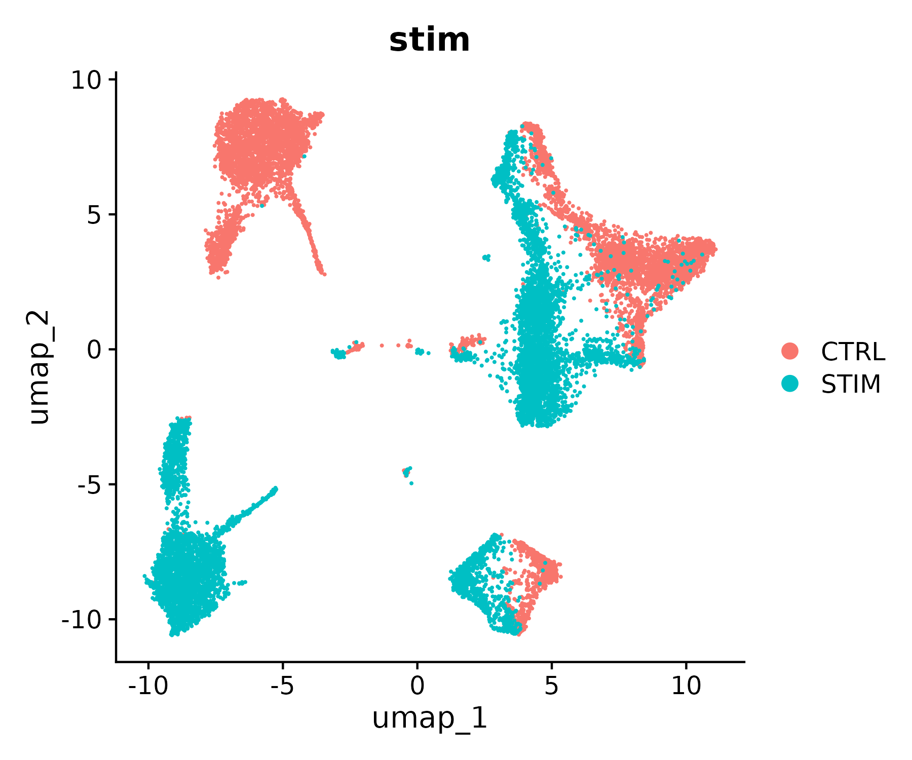
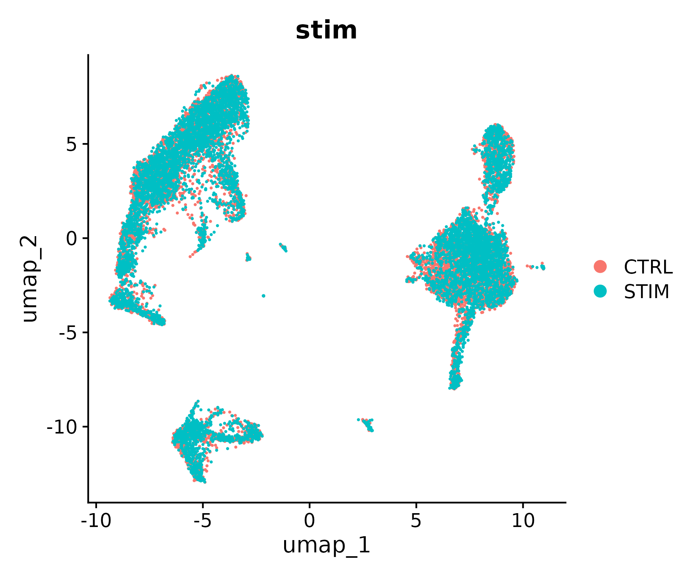
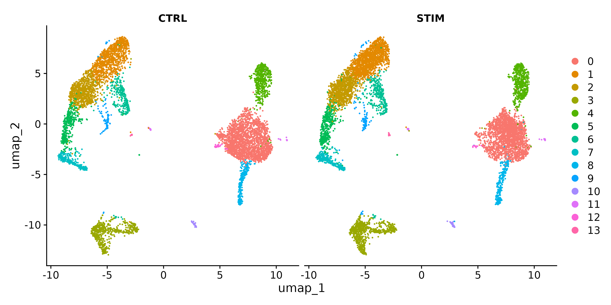
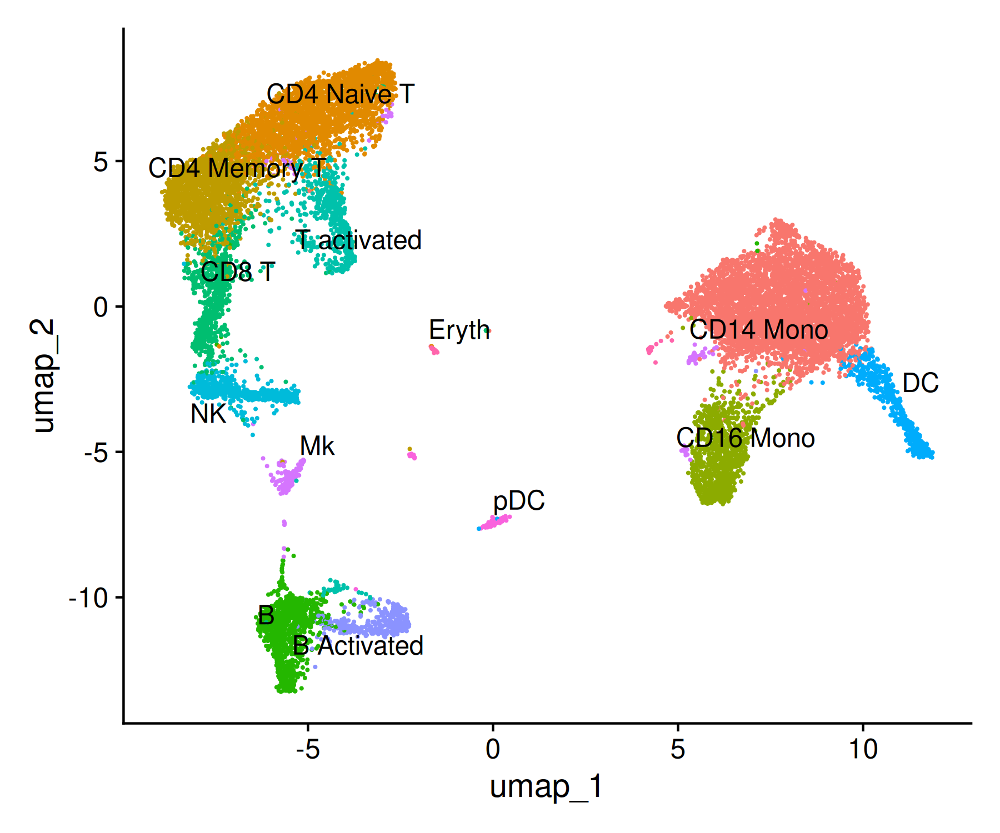
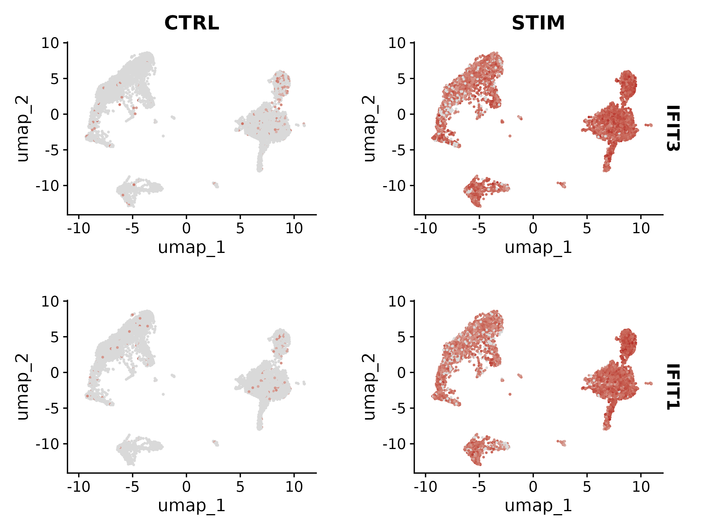
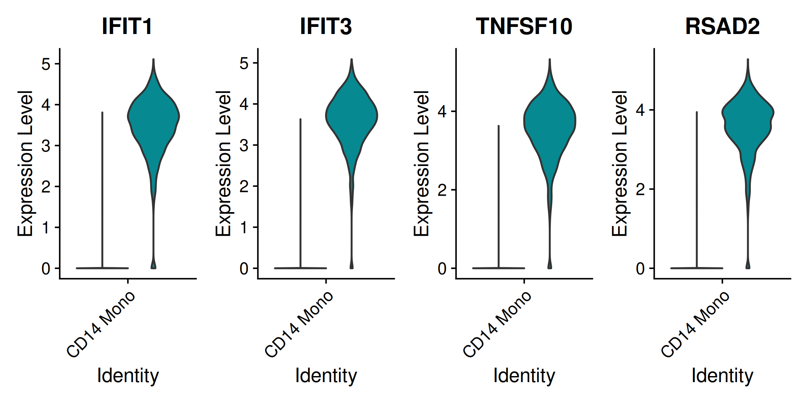
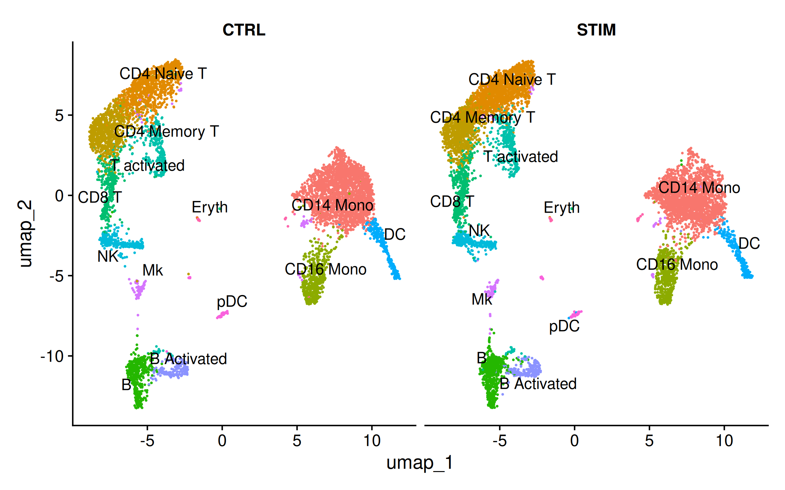
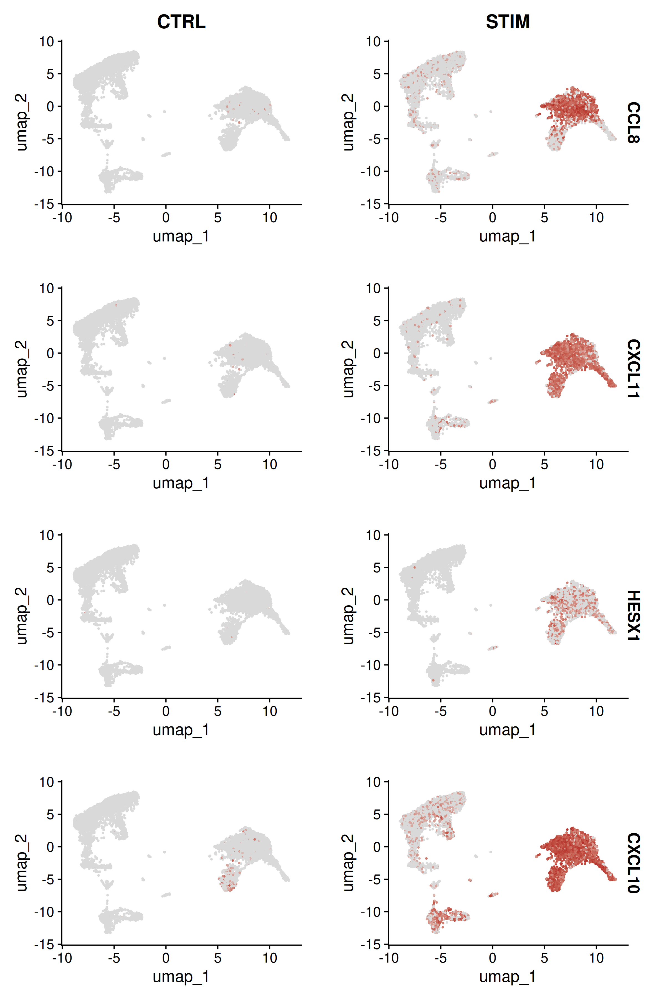

Multi-Sample Integration
Last updated on 2026-10-23 | Edit this page
Overview
Questions
- Why do cells from different samples cluster separately even when they are the same cell type?
- How does CCA-based integration correct for batch effects?
- How do we evaluate whether integration was successful without removing real biology?
- How do we find genes that differ between conditions within a specific cell type?
- When should we NOT integrate datasets?
Objectives
- Explain the batch effect problem and why simple merging is insufficient
- Integrate two conditions using Seurat v5 CCA integration with IntegrateLayers
- Evaluate integration by checking condition mixing and preserved marker expression
- Identify conserved markers and condition-specific differentially expressed genes
- Recognize when integration is inappropriate for the experimental design
Prerequisites
This episode requires an RStudio session on the Negishi cluster. Launch RStudio (bioconductor) under Bioinformatics Apps on Open OnDemand as described in the Setup instructions.
Setup
R
library(Seurat)
library(SeuratData)
library(ggplot2)
library(patchwork)
Set up the working directory to match the previous episodes:
R
work_dir <- paste0(
"/scratch/negishi/", Sys.getenv("USER"),
"/scrna_workshop/"
)
setwd(work_dir)
Why Integration Is Needed
In the previous episodes, we analyzed a single sample of PBMCs. But many experimental designs involve multiple samples – different patients, different time points, or different conditions (treated vs. control). When we combine these samples for joint analysis, a common problem emerges: cells cluster by which sample they came from rather than by what cell type they are.
This happens because of batch effects: technical differences between samples caused by variation in cell handling, library preparation, sequencing depth, or reagent lots. These technical differences can be large enough to dominate over the biological differences between cell types, making it impossible to compare the same cell type across conditions.
Integration algorithms correct for batch effects by finding shared biological structure across samples. The goal is to align the same cell types so they co-cluster, while preserving the real biological differences (like changes in gene expression due to treatment).
Let’s see this problem in practice using a dataset of PBMCs from control and IFN-beta stimulated conditions.
Loading the IFNB Dataset
The IFNB dataset from the SeuratData package contains
PBMCs from two conditions:
- CTRL: untreated control PBMCs
- STIM: PBMCs stimulated with interferon-beta (IFN-beta), a cytokine that activates antiviral immune responses
R
InstallData("ifnb")
ifnb <- LoadData("ifnb")
ifnb
An object of class Seurat
14053 features across 13999 samples within 1 assay
Active assay: RNA (14053 features, 0 variable features)
2 layers present: counts, dataThe dataset has approximately 14,000 cells and 14,000 genes. The
stim column in the metadata records which condition each
cell came from.
R
table(ifnb$stim)
CTRL STIM
6548 7451Roughly 6,500 control cells and 7,500 stimulated cells.
Preparing Data
In Seurat v5, multi-sample data is handled by splitting the assay into layers – one layer per sample. This keeps everything in a single object while allowing integration methods to process each sample separately.
R
ifnb[["RNA"]] <- split(ifnb[["RNA"]], f = ifnb$stim)
ifnb
An object of class Seurat
14053 features across 13999 samples within 1 assay
Active assay: RNA (14053 features, 0 variable features)
4 layers present: counts.CTRL, counts.STIM, data.CTRL, data.STIMThe counts are now stored in two separate layers:
counts.CTRL and counts.STIM.
Now run the standard preprocessing steps. When the assay is split,
NormalizeData and FindVariableFeatures process
each layer independently:
R
ifnb <- NormalizeData(ifnb)
ifnb <- FindVariableFeatures(ifnb, selection.method = "vst", nfeatures = 2000)
ifnb <- ScaleData(ifnb)
ifnb <- RunPCA(ifnb)
Let’s see what happens if we run UMAP and clustering without integration:
R
ifnb <- FindNeighbors(ifnb, dims = 1:30, reduction = "pca")
ifnb <- FindClusters(ifnb, resolution = 0.5)
ifnb <- RunUMAP(ifnb, dims = 1:30, reduction = "pca")
R
DimPlot(ifnb, reduction = "umap", group.by = "stim")

You should see a clear separation between control (CTRL) and stimulated (STIM) cells. Instead of clustering by cell type (T cells with T cells, monocytes with monocytes), the cells cluster by condition. This means we cannot directly compare the same cell type between conditions – which is exactly what we want to do. This is the batch effect problem.
Running Integration
Seurat v5 provides IntegrateLayers() as a unified
interface for dataset integration. We will use the CCA
(Canonical Correlation Analysis) method, which identifies
shared sources of variation between the two conditions and uses them to
align the data.
CCA works by:
- Finding canonical correlation vectors – directions in gene expression space along which the two datasets are maximally correlated
- Identifying anchor pairs – cells from different conditions that are each other’s mutual nearest neighbors in the shared CCA space
- Using the anchors to compute a correction vector that aligns matching cell types across conditions
Animation: Why integrate, and what CCA integration does
R
ifnb <- IntegrateLayers(object = ifnb,
method = CCAIntegration,
orig.reduction = "pca",
new.reduction = "integrated.cca")
| Parameter | Value | Description |
|---|---|---|
method |
CCAIntegration |
Use Canonical Correlation Analysis for integration. |
orig.reduction |
"pca" |
The unintegrated PCA reduction to use as input. |
new.reduction |
"integrated.cca" |
Name for the new integrated reduction that will be stored in the object. |
Now re-run the downstream steps using the integrated reduction instead of the original PCA:
R
ifnb <- FindNeighbors(ifnb, reduction = "integrated.cca", dims = 1:30)
ifnb <- FindClusters(ifnb, resolution = 0.5)
ifnb <- RunUMAP(ifnb, reduction = "integrated.cca", dims = 1:30)
Visualize the integrated result:
R
DimPlot(ifnb, reduction = "umap", group.by = "stim")

The control and stimulated cells should now be intermingled within each cluster. Cell types from both conditions co-cluster, which is what we want.
Let’s verify with a split view:
R
DimPlot(ifnb, reduction = "umap", split.by = "stim")

Both panels should show the same overall structure, with the same clusters present in both conditions. This confirms that integration successfully aligned shared cell types.
Before proceeding to analysis, rejoin the layers so that expression data from both conditions is accessible in a single matrix:
R
ifnb[["RNA"]] <- JoinLayers(ifnb[["RNA"]])
Other integration methods
Seurat v5 supports several integration methods through the same
IntegrateLayers() interface. You can swap
CCAIntegration for any of these:
| Method | Function | Strengths |
|---|---|---|
| CCA | CCAIntegration |
Best for datasets with shared cell types. Robust to differences in cell type composition between batches. The default choice for most experiments. |
| Harmony | HarmonyIntegration |
Very fast, scales well to large datasets (100k+ cells).
Uses iterative soft clustering. Requires the harmony R
package. Widely used and well-benchmarked. |
| RPCA | RPCAIntegration |
Faster than CCA (uses reciprocal PCA instead of full CCA). Good when datasets are large or when CCA is too slow. May be less robust when cell type composition differs substantially between batches. |
| scVI | scVIIntegration |
Deep learning approach. Excellent for complex batch
structures (many batches, large composition differences). Requires
Python and the scvi-tools package. Slower to run but often
produces superior results on difficult datasets. |
For most standard experiments with two to five batches and shared cell types, CCA or Harmony work well. Use scVI for more complex scenarios (many batches, different tissues, cross-species integration).
When NOT to integrate
Integration assumes that the same cell types exist in all batches and aligns them. This is the wrong approach when:
- All cells are expected to differ between conditions. For example, comparing tumor cells to normal epithelial cells – these are fundamentally different populations and should not be forced to co-cluster.
- You want to find condition-specific cell types. Integration pushes cells together, which can mask the appearance of a cell state that exists in only one condition.
- The batch effect is minimal. If cells already mix well by condition on the UMAP (as in some well-controlled experiments), integration is unnecessary and may introduce artifacts.
Always visualize the data before integration to assess whether batch effects are actually present. If conditions already mix well, skip integration and analyze directly.
Analysis on Integrated Data
Now that the data is integrated, we can label cell types and compare between conditions.
Cell type labels
The ifnb object comes with cell type labels: the
seurat_annotations column in its metadata, assigned by the
Seurat developers from marker genes. We use them as our cell types
instead of labelling the 14 integrated clusters by hand. Episode 6
showed the manual approach, and Challenge 3 at the end of this episode
repeats it on these clusters.
R
# Use the cell type labels that ship with the ifnb dataset
ifnb$celltype <- ifnb$seurat_annotations
Idents(ifnb) <- "celltype"
table(ifnb$celltype)
OUTPUT
CD14 Mono CD4 Naive T CD4 Memory T CD16 Mono B CD8 T
4362 2504 1762 1044 978 814
T activated NK DC B Activated Mk pDC
633 619 472 388 236 132
Eryth
55 Thirteen cell types. They are finer than the ten of episode 6 in some places (naive and memory CD4 T cells, resting and activated B cells, an activated T cell group) and include megakaryocytes (Mk, the platelet precursors) and a few erythrocytes (Eryth). CD16 Mono are the FCGR3A+ monocytes of episode 6 (FCGR3A is the gene that encodes CD16).
Checking the integration against the labels
The labels were assigned independently of our integration, so they give a check on it: if integration grouped cells by type, each integrated cluster should consist mostly of one cell type, drawn from both conditions.
R
table(cluster = ifnb$seurat_clusters, celltype = ifnb$celltype)
OUTPUT
celltype
cluster CD14 Mono CD4 Naive T CD4 Memory T CD16 Mono B CD8 T T activated
0 4272 0 0 16 1 0 0
1 0 2332 47 1 1 9 20
2 5 132 1643 0 0 30 16
3 0 0 0 0 975 1 15
4 28 0 0 1027 0 0 0
5 1 2 51 0 0 765 7
6 0 38 8 0 0 1 575
7 0 0 0 0 0 8 0
8 48 0 0 0 0 0 0
9 0 0 13 0 1 0 0
10 0 0 0 0 0 0 0
11 3 0 0 0 0 0 0
12 5 0 0 0 0 0 0
13 0 0 0 0 0 0 0
celltype
cluster NK DC B Activated Mk pDC Eryth
0 0 4 1 2 0 0
1 0 0 0 6 0 0
2 1 0 0 1 0 0
3 0 0 387 0 0 1
4 0 0 0 13 0 0
5 9 0 0 0 0 0
6 0 0 0 0 1 0
7 608 0 0 0 0 0
8 0 466 0 0 1 0
9 1 0 0 175 0 0
10 0 2 0 0 106 0
11 0 0 0 0 0 54
12 0 0 0 39 0 0
13 0 0 0 0 24 0Almost every cluster is dominated by one cell type: cluster 0 is CD14 monocytes, 3 is B cells (resting and activated together), 4 is CD16 monocytes, 5 CD8 T cells, 7 NK cells, 8 dendritic cells, 10 pDCs and 11 erythrocytes. Clusters 1 and 2 split the CD4 T cells into mostly naive and mostly memory cells, and the megakaryocytes fall into two small clusters (9 and 12). A cluster that mixed, say, T cells and monocytes would point to an integration or clustering problem. Together with the split view above, which shows every cluster in both conditions, this confirms the integration.
R
DimPlot(ifnb, reduction = "umap", label = TRUE, repel = TRUE) + NoLegend()

Conserved markers
Conserved markers are genes that are markers for a
cell type in both conditions.
FindConservedMarkers() tests for differential expression
within each condition separately and then combines the results:
R
conserved <- FindConservedMarkers(ifnb,
ident.1 = "CD14 Mono",
grouping.var = "stim",
only.pos = TRUE)
head(conserved, 10)
| Parameter | Value | Description |
|---|---|---|
ident.1 |
"CD14 Mono" |
The cell type to find markers for. |
grouping.var |
"stim" |
The metadata column defining conditions. The test is run within each level of this variable. |
only.pos |
TRUE |
Only return upregulated genes. |
The output has columns for each condition (e.g.,
CTRL_avg_log2FC, STIM_avg_log2FC) showing that
the marker is consistent across both. Genes like S100A8, S100A9, TYROBP
and FCER1G appear as strong conserved markers for monocytes.
OUTPUT
CTRL_p_val CTRL_avg_log2FC CTRL_pct.1 CTRL_pct.2 CTRL_p_val_adj
C15orf48 0 3.056281 0.984 0.189 0
S100A8 0 5.231200 0.853 0.063 0
IL8 0 4.008658 0.911 0.133 0
TYROBP 0 2.505484 0.997 0.249 0
FCER1G 0 2.375142 0.992 0.251 0
S100A9 0 5.162259 0.795 0.060 0
CTSB 0 3.378535 0.873 0.174 0
TYMP 0 2.359353 0.961 0.272 0
SOD2 0 2.418683 0.963 0.276 0
S100A4 0 2.704430 0.953 0.270 0
STIM_p_val STIM_avg_log2FC STIM_pct.1 STIM_pct.2 STIM_p_val_adj
C15orf48 0 3.110432 0.988 0.191 0
S100A8 0 6.080987 0.523 0.016 0
IL8 0 4.025185 0.343 0.025 0
TYROBP 0 2.550902 0.999 0.227 0
FCER1G 0 2.753517 0.991 0.210 0
S100A9 0 5.758266 0.686 0.030 0
CTSB 0 3.791644 0.944 0.174 0
TYMP 0 2.554257 0.998 0.441 0
SOD2 0 3.103627 0.991 0.319 0
S100A4 0 2.986390 0.928 0.186 0
max_pval minimump_p_val
C15orf48 0 0
S100A8 0 0
IL8 0 0
TYROBP 0 0
FCER1G 0 0
S100A9 0 0
CTSB 0 0
TYMP 0 0
SOD2 0 0
S100A4 0 0Condition-specific differential expression
The most interesting biological question is: which genes change between control and stimulated cells within the same cell type? To answer this, we subset to a single cell type and compare conditions:
R
# Subset to CD14+ monocytes
mono <- subset(ifnb, idents = "CD14 Mono")
# Set the condition as the active identity
Idents(mono) <- "stim"
# Find DE genes between stimulated and control
mono.de <- FindMarkers(mono,
ident.1 = "STIM",
ident.2 = "CTRL",
min.pct = 0.25,
logfc.threshold = 0.25)
head(mono.de, 10)
OUTPUT
p_val avg_log2FC pct.1 pct.2 p_val_adj
IFIT1 0 7.319139 0.985 0.033 0
CXCL10 0 8.036564 0.984 0.035 0
RSAD2 0 6.741673 0.988 0.045 0
TNFSF10 0 6.991279 0.989 0.047 0
IFIT3 0 6.883785 0.992 0.056 0
IFIT2 0 7.179929 0.961 0.039 0
CXCL11 0 8.624208 0.932 0.012 0
CCL8 0 9.134191 0.918 0.017 0
IDO1 0 5.455898 0.965 0.089 0
MX1 0 5.059052 0.960 0.093 0The top DE genes are interferon-stimulated genes (ISGs) such as IFIT1, RSAD2, TNFSF10, IFIT3, IFIT2 and MX1, together with the IFN-inducible chemokines CXCL10, CXCL11 and CCL8. These are exactly the genes you would expect to be upregulated by IFN-beta stimulation, confirming that our integration preserved the biological signal while correcting the batch effect. The exact fold changes, and the number of genes that pass a significance cutoff, vary slightly between Seurat versions; the leading ISGs do not.
Save the annotated ifnb object for the next episode:
R
saveRDS(ifnb, file = "ifnb_annotated.rds")
Visualizing condition-specific changes
Let’s visualize a few ISGs to see the condition-specific response:
R
FeaturePlot(ifnb,
features = c("IFIT3", "IFIT1"),
split.by = "stim",
cols = c("grey85", "firebrick"))

R
VlnPlot(ifnb,
features = c("IFIT1", "IFIT3", "TNFSF10", "RSAD2"),
split.by = "stim",
idents = "CD14 Mono",
ncol = 4,
pt.size = 0)

IFIT1 and IFIT3 are strongly induced in the stimulated condition across multiple cell types, with particularly strong expression in monocytes. This demonstrates that integration corrected the batch effect (cell types co-cluster) while preserving the biological effect of IFN-beta stimulation (ISGs are still differentially expressed).
Challenge 1: Quantifying integration quality
After integration, check whether control and stimulated cells of the
same type are well mixed within each cluster. Use
DimPlot(split.by = "stim") to visualize, then compute the
proportion of each condition per cluster.
R
# Split UMAP by condition
DimPlot(ifnb, reduction = "umap", split.by = "stim", label = TRUE, repel = TRUE) +
NoLegend()
# Proportion table: condition per cell type
prop.table(table(Condition = ifnb$stim, CellType = Idents(ifnb)), margin = 2)
Are the proportions roughly balanced (close to 50/50) within each cell type?
OUTPUT
CellType
Condition CD14 Mono CD4 Naive T CD4 Memory T CD16 Mono B CD8 T
CTRL 0.5077946 0.3905751 0.4875142 0.4856322 0.4161554 0.4324324
STIM 0.4922054 0.6094249 0.5124858 0.5143678 0.5838446 0.5675676
CellType
Condition T activated NK DC B Activated Mk pDC
CTRL 0.4739336 0.4814216 0.5466102 0.4768041 0.4872881 0.3863636
STIM 0.5260664 0.5185784 0.4533898 0.5231959 0.5127119 0.6136364
CellType
Condition Eryth
CTRL 0.4181818
STIM 0.5818182
Most cell types fall in the 0.40–0.60 range, and the split UMAP shows every cell type in both panels with similar density. The baseline is not 50/50: STIM has 7,451 of the 13,999 cells (53%), so about 0.47 CTRL and 0.53 STIM is what perfect mixing looks like here.
Some observations worth discussing:
- CD14 Mono, the largest population, is close to the baseline (50.8/49.2).
- CD4 Naive T and pDC show the largest deviation (about 39/61), with more cells in the stimulated condition. This could reflect a real biological shift in culture rather than a failure of integration; a few percentage points either way are well within what two samples of one experiment give.
- Rare populations (Mk, Eryth, pDC) have small cell numbers, so chance has more effect on their proportions.
The key diagnostic: if integration had failed, you would see a cell type that is 90%+ from one condition, or the same cell type forming separate clusters in the two panels. Neither is the case here.
Challenge 2: Interferon response genes in monocytes
Find the top 10 differentially expressed genes between stimulated and
control CD14+ monocytes (we computed this above as
mono.de). Are these genes consistent with an interferon
stimulation response?
R
# Top 10 upregulated genes in stimulated vs control CD14+ monocytes
top10_de <- head(mono.de[order(mono.de$avg_log2FC, decreasing = TRUE), ], 10)
print(top10_de)
# Visualize the top 4 genes
FeaturePlot(ifnb,
features = rownames(top10_de)[1:4],
split.by = "stim",
ncol = 4,
cols = c("grey85", "firebrick"))

OUTPUT
p_val avg_log2FC pct.1 pct.2 p_val_adj
CCL8 0.000000e+00 9.134191 0.918 0.017 0.00000e+00
CXCL11 0.000000e+00 8.624208 0.932 0.012 0.00000e+00
HESX1 2.729040e-227 8.265045 0.388 0.001 3.83512e-223
CXCL10 0.000000e+00 8.036564 0.984 0.035 0.00000e+00
IFIT1 0.000000e+00 7.319139 0.985 0.033 0.00000e+00
IFIT2 0.000000e+00 7.179929 0.961 0.039 0.00000e+00
TNFSF10 0.000000e+00 6.991279 0.989 0.047 0.00000e+00
CD38 4.872419e-277 6.974732 0.464 0.005 6.84721e-273
IFIT3 0.000000e+00 6.883785 0.992 0.056 0.00000e+00
GMPR 4.371764e-244 6.765773 0.419 0.005 6.14364e-240The top 10 genes fall into two functional categories, both consistent with IFN-beta stimulation:
| Gene | log2FC | pct.1 / pct.2 | Function |
|---|---|---|---|
| CCL8 | 9.13 | 0.92 / 0.02 | Chemokine; recruits monocytes and T cells to sites of inflammation |
| CXCL11 | 8.62 | 0.93 / 0.01 | IFN-inducible chemokine; attracts activated T cells via CXCR3 |
| HESX1 | 8.27 | 0.39 / 0.00 | Transcription factor; emerging role in IFN signaling |
| CXCL10 | 8.04 | 0.98 / 0.04 | IFN-inducible chemokine (IP-10); major recruiter of immune cells |
| IFIT1 | 7.32 | 0.99 / 0.03 | Directly induced by type I IFN; inhibits viral translation |
| IFIT2 | 7.18 | 0.96 / 0.04 | Antiviral effector; regulates translation during infection |
| TNFSF10 | 6.99 | 0.99 / 0.05 | TRAIL; IFN-induced death ligand that kills infected cells |
| CD38 | 6.97 | 0.46 / 0.01 | NAD-consuming enzyme induced by type I IFN in monocytes |
| IFIT3 | 6.88 | 0.99 / 0.06 | Antiviral effector; forms complex with IFIT1 and IFIT2 |
| GMPR | 6.77 | 0.42 / 0.01 | Guanosine monophosphate reductase; modulates purine metabolism |
Two patterns stand out:
Chemokines dominate the top. CCL8, CXCL11, and CXCL10 are three of the top four, with fold changes of 8.0-9.1, reflecting the monocyte’s primary role as a sentinel cell: upon IFN stimulation, monocytes broadcast chemokine signals to recruit other immune cells. Note the pct.2 values (0.01-0.04) – these chemokines are essentially absent in control cells and massively induced by stimulation.
Classical ISGs fill the rest. IFIT1/2/3 and TNFSF10 are canonical interferon-stimulated genes; CD38 and GMPR are induced in a subset of cells (pct.1 0.42-0.46). The IFIT family shows the highest pct.1 values (0.96-0.99), meaning nearly every stimulated monocyte expresses them – a hallmark of a robust, uniform interferon response.
The FeaturePlot confirms this visually: CCL8, CXCL11, HESX1, and CXCL10 are virtually absent in the CTRL panels (gray) and strongly expressed in the STIM panels (red), with the signal concentrated in the monocytes (right side of the UMAP); HESX1 is induced in only a subset of them. CXCL10 also reaches the stimulated B cells and is scattered through the T cells, consistent with these cell types also responding to IFN-beta, though less strongly than monocytes.
Challenge 3: Label the integrated clusters yourself
We used the labels that ship with the dataset. Label the 14
integrated clusters from marker genes instead, as in episode 6, and
compare your labels with seurat_annotations. Plot the
canonical markers per cluster first, then write one label per
cluster.
R
Idents(ifnb) <- "seurat_clusters"
DotPlot(ifnb, features = c("CD3D", "IL7R", "CCR7", "CD8A", "GNLY", "NKG7",
"MS4A1", "CD79A", "CD14", "LYZ", "FCGR3A", "MS4A7",
"FCER1A", "LILRA4", "IL3RA", "PPBP", "HBB")) +
coord_flip()
A label vector only fits the clusters it was written for
The solution below fits the 14 clusters this lesson’s integration gives with the package versions in the setup instructions. With other versions the number or order of the clusters can change, and the names then land on the wrong cells without any error. The code stops if the number of clusters does not match the number of labels; it cannot detect a change in order, so check your dot plot against the comment beside each label.
R
# One label per integrated cluster, in cluster order (0 to 13)
my.labels <- c(
"CD14 Mono", # 0: CD14+, LYZ+, CST3+
"CD4 Naive T", # 1: CD3D+, CCR7 high
"CD4 Memory T", # 2: CD3D+, IL7R+, CCR7 lower
"B", # 3: MS4A1+, CD79A+
"CD16 Mono", # 4: FCGR3A+, MS4A7+
"CD8 T", # 5: CD3D+, CD8A+, NKG7+
"T activated", # 6: IL7R+, CCR7+, CD3D low
"NK", # 7: GNLY+, NKG7+, CD3D-
"DC", # 8: LYZ+, CST3+, FCER1A+
"Mk", # 9: PPBP+
"pDC", # 10: LILRA4+, IL3RA+
"Eryth", # 11: HBB+
"Mk", # 12: PPBP+, with monocyte genes
"pDC" # 13: no clear marker; the shipped labels say pDC
)
if (nlevels(ifnb$seurat_clusters) != length(my.labels)) stop("ifnb has ", nlevels(ifnb$seurat_clusters), " clusters but my.labels has ", length(my.labels), " labels; check the dot plot and edit my.labels")
names(my.labels) <- levels(ifnb$seurat_clusters)
ifnb$manual_celltype <- unname(my.labels[as.character(ifnb$seurat_clusters)])
table(Manual = ifnb$manual_celltype, Shipped = ifnb$celltype)
Idents(ifnb) <- "celltype"
OUTPUT
Shipped
Manual CD14 Mono CD4 Naive T CD4 Memory T CD16 Mono B CD8 T
B 0 0 0 0 975 1
CD14 Mono 4272 0 0 16 1 0
CD16 Mono 28 0 0 1027 0 0
CD4 Memory T 5 132 1643 0 0 30
CD4 Naive T 0 2332 47 1 1 9
CD8 T 1 2 51 0 0 765
DC 48 0 0 0 0 0
Eryth 3 0 0 0 0 0
Mk 5 0 13 0 1 0
NK 0 0 0 0 0 8
pDC 0 0 0 0 0 0
T activated 0 38 8 0 0 1
Shipped
Manual T activated NK DC B Activated Mk pDC Eryth
B 15 0 0 387 0 0 1
CD14 Mono 0 0 4 1 2 0 0
CD16 Mono 0 0 0 0 13 0 0
CD4 Memory T 16 1 0 0 1 0 0
CD4 Naive T 20 0 0 0 6 0 0
CD8 T 7 9 0 0 0 0 0
DC 0 0 466 0 0 1 0
Eryth 0 0 0 0 0 0 54
Mk 0 1 0 0 214 0 0
NK 0 608 0 0 0 0 0
pDC 0 0 2 0 0 130 0
T activated 575 0 0 0 0 1 0Each cluster gets the shipped label that most of its cells carry, so most cells sit on the diagonal of the table. The off-diagonal cells are the ones a cluster-level label cannot get right: activated B cells inside the B cell cluster, the naive and memory CD4 T cells that the two CD4 clusters share, and a few cells of other types in each cluster. Cluster 13 has no clear marker in the dot plot; with only 24 cells, it is labelled pDC because the shipped annotation says so. Two lessons: a cluster label is a statement about most of its cells, not all of them, and a cluster without markers is a candidate for removal rather than a cell type.
The last line sets the identities back to the shipped labels, so any code you run afterwards uses the same cell types as the rest of the lesson.
- Batch effects cause cells to cluster by sample rather than by cell type, preventing cross-condition comparisons
- CCA integration finds shared correlation structure between conditions and aligns matching cell types using anchor pairs
- In Seurat v5, multi-sample data is handled by splitting assay layers, integrating, then rejoining layers for downstream analysis
- Always verify integration by checking that conditions mix within clusters AND that known biological differences (like ISG expression) are preserved
- Integration is not always appropriate; skip it when conditions have no shared cell types or when batch effects are minimal